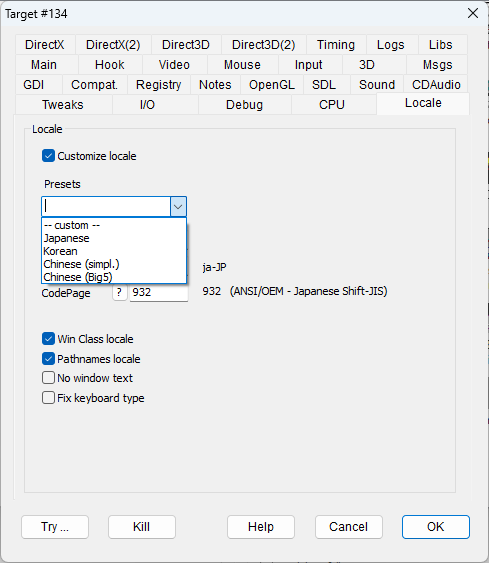
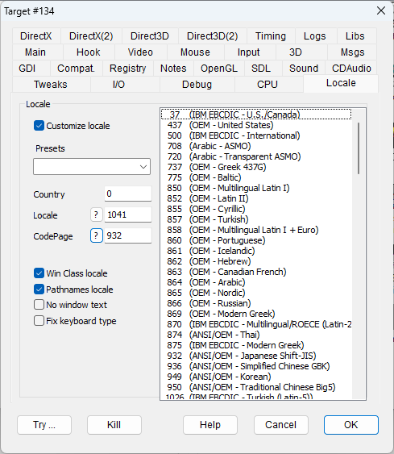

|
Customize Locale |
HOOKLOCALE |
Enables locale API hooking. |
|
Presets |
To simplify the choice of proper values for the "Locale" and "CodePage" values, it is possible to take advantage of presets defined inside the file presets.ini, located in the DxWnd folder. The file is a text file and can be easily edited to add other commonly used presets. |
|
|
Country |
Placeholder for country ID, currently unused. For a list of country IDs, see WinNls.h. |
|
|
Locale |
System Language ID. DxWnd pretends that the program is running in the context of the selected language. For a list of valid language IDs, refer here. NOTE: The question marked button to the left of the field opens a panel with the list of the available locale IDs. |
|
|
CodePage |
Code Page ID. DxWnd pretends that the program is running in the context of the selected code page. For a list of code page IDs supported in the current machine, use the CodePage.exe tool or refer here. NOTE: The question marked button to the left of the field opens a panel with the list of the available code page IDs. |
|
|
Win class locale |
CLASSLOCALE |
This flag enables code page transformation on window class data. Depending on the situation, it may be better to set this flag rather than not. It essentially impacts the program's window's title bar. |
|
Pathnames locale |
PATHLOCALE |
This flag enables code page transformation on ASCII pathnames. Depending on the situation, it may be better to set this flag rather than not. It may condition the ability of the game to locate and use the files on your file system. |
|
No window text |
NOSETTEXT |
This flag disables the programmatic setting of the localized window title. Translating the text to ASCII/WIDE formats proved to be a complex and dangerous operation that may crash the program. In this case, a void window title could be preferred to a crashed program. |
|
Fix keyboard type |
FIXKEYBOARDTYPE |
This flag adapts the keyboard type to the emulated locale (see GetKeyboardType system call). |